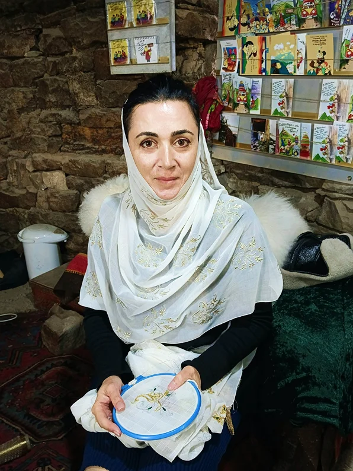

Кубачи
Кубачи - сокровищница за облаками.
Село, расположившееся на вершине горы, на высоте 1650 метров по
пол года окутанное туманом, в прошлом длительное время было
столицей государства Зирихгеран.
Кубачи объединили под своей властью соседние села (Амузги,
Анчибачи, Дацамаже, Дешиже, Кубасана, Сулевкент и Шири) и
возвели просто невероятные укрепления, защищая свое небольшое
государство.
Зирихгеран - даргинско-кубачинское средневековое государственное
образование, существовавшее в горном Дагестане в период с VI
века по XV век.
Вы и сейчас можете отправиться в соседнее село Ицари и узреть
самую большую, круглую боевую башню на Северном Кавказе. И таких
башен были десятки, закрывая дороги, ведущие в Зирихгеран, от
многочисленных врагов.
Основная функция - сигнальная и сторожевая. В случае успешного
нападения врагов - башня становилась еще и оборонительной.
Башня находится на природном выступе горы, ее с трех сторон
защищают крутые склоны, а с одной стороны - восьмиметровый
ров.
В чем феномен этого места? Что позволило ему стать центром силы
на века?
Совет старейшин.
В Кубачи никогда не правил один человек. Селом управлял выборный
совет старейшин.
А теперь вдумайтесь: Кубачи ни разу не был сожжен или разграблен
(..ну может Тамерланом, но это не точно..).
Горская демократия в чем-то напоминала греческую, но с
локальными особенностями. Эффективное управление, союзы,
укрепления, постоянная армия из 7 башен и 40 неженатых мужчин,
закованных в лучшую броню своего времени, позволило существовать
Зирихгерану около 700 лет!
Власть над металлом.
Кубачинцы не пасли скот и не сажали пшеницу. Всё необходимое они
приобретали за деньги. А денег в селе было, что у дурака махорки
- Откуда?
Всё просто - они в массовом порядке производили лучшие в мире
кольчуги. Причем изобрели способ повысить прочность колец в 4
раза и при этом не увеличивать изделия.
Соседнее село Амузги ковало булатные кинжалы и сабли. В Харбуке
делали ножи, кинжалы и вообще все металлические изделия. А вот
украшением сабель занимались Кубачи. Вся эта горная корпорация
сообща производила в огромном количестве сверх дорогие товары
своего времени.
Чтобы было понятно, Амузгинскую саблю, украшенную в Кубачи,
мог преподнести в подарок персидский шахиншах турецкому
султану. А они, на минуточку, были одни из богатейших людей на
планете.
Закрытость и культ мастерства.
Для предотвращения утечки знаний о работе с металлом, в Кубачи
возникает адат на браки между жителями из других сёл. В
результате возникает свой собственный язык и богатейший
культурный мир. Мастерами становятся все и мужчины и женщины.
Женщины ткут золотом по шелку, изготавливая платки и платья
фантастической красоты. Мужчины работают с металлом с детства и
до конца жизни. Кубачинцы много путешествуют, продают свои
товары. Их знают в Китае и Париже, Исфахане и Персии. Из поездок
они привозят книги, предметы искусства. Появляется свой стиль
узора, которыми покрывают не только изделия на продажу, но и
домашнюю утварь.

Адаптация.
Под разумным управлением совета старейшин из века в век Кубачи
находят себя. Кольчуги принесли много денег, но настал век
пороха. «Нет проблем»- сказали кубачинцы и стали делать
великолепные ружья Мажара и украшать их так, что и сейчас они
выглядят Вау!
Началась Кавказская война. Кубачинцы начали продавать
украшенные сабли русским офицерам. К концу войны популярность
их изделий стала настолько велика, что у всех Романовых был
дома кавказский кабинет с кубачинским оружием.
В какой то момент стало много и они стали переплавлять их и
делать украшения- этот путь позволил кубачинцам, в отличие от
многих соседних сёл, войти в XXI век сохранившиеся и
преуспевающими. Все мужчины села без исключения ювелиры. Этому
учат с первого до последнего дня в школе,в каждом доме есть
мастерская и музей. Традиция жива.
Терпимость.
По описанием средневековых историков в Кубачи проживали
представители разных религий: христиане, иудеи ,но главной
религией был зороастризм. Отсюда огромное количество традиций,
непохожих на соседние сёла, от «небесных похорон» до почитания
собак, как хранителей дома, а не кошек.
С IX века по соседству обосновались Курейшиты, они несли новую
веру- Ислам. В течение 5 веков постепенно со всех сторон они
подбирались к Зирихгерану.
Курайшиты (курейшиты)- правящий клан древней Мекки, хранители
Каабы.
Достаточно сказать, что между Кубачи и Кала- Корейш всего 8 км,
но чтобы их пройти ушло 500 лет. Что стало финальной точкой не
ясно.
Но есть легенда: О шейхе Гасане из Села Шири, но из нее не
ясно почему кубачинцы победив в битве и обезглавив топриком
для приготовления фарша ,заговоренного война, вдруг приняли
Ислам, который ну совсем был чужд. По другой версии мог
повлиять поход Тамерлана.
В самом Кубачи после XIV 14 века отбиты все лица на барельефах
домов ,словно после погрома. После этого меняется стиль
искусства. Появляются знаменитые кубачинские орнаменты Тутта и
Мархарай. С новой силой расцветает искусство резьбы по камню.
Если раньше это были изображения людей и мифических животных, то
сейчас это арабистика и растительный узоры.
«Тутта»- симметричный ветвистый узор ,напоминающий ветку дерева
с листьями и бутонами «Мархарай»- ассиметричный узор,
переводится как «заросли». Надо сказать, что гулять по старой
части села Кубачи- это эстетическое удовольствие. На
средневековых домах до сих пор сотнями красуются уникальные
резные камни. Кубачи через искусство переработали и новую
религию, превратив ее во что то свое- «кубачинское».
Вместо эпилога хочется привести интересный факт. У села есть свой отдельный зал в Эрмитаже, парижском Лувре, Метрополитен- музее Нью-Йорка. Скажите, а ваш город представлен в этих музеях?
автор текста
Владимир Лис.